Designed to a brief from IKEA, Vattenkanna sits in the sink, collects the water you'd otherwise pour away while handwashing, strains it, and pours it back out, as easily as a watering can.
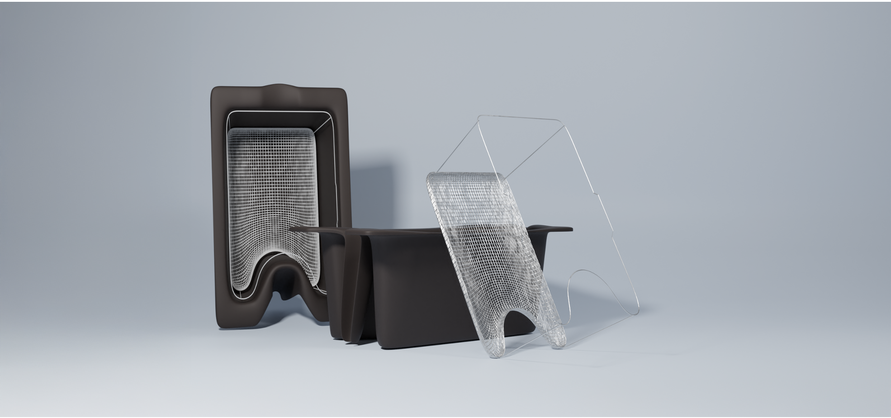
The brief was open: design a product that helps with food waste or energy conservation. The funnel from there to the kitchen sink came from the data.
Open prompt from Ian: pick a sustainability angle.
89% of UK water-related CO₂ comes from heating water, not pumping it.
Kitchen and bathroom dominate household water use; kitchen is where it's most addressable.
51% of UK households never use a dishwasher; handwashing wastes the most water per session.
Photographs of sinks from different countries, interviews with dishwashers across ages and households, and observation of how people actually wash.
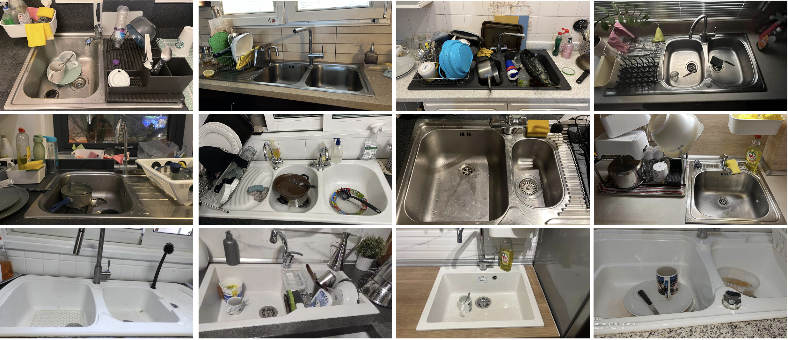
Twelve sinks from six countries. Sizes and configurations varied, but most fit within a standard ~34 × 40 × 20 cm range — enough that one vessel could work in most of them.
"I'd want an easier alternative for dishes, I hate doing them."
"We'd be willing to change habits, as long as it doesn't take more effort."
Interviews kept landing on the same point: people are willing to change habits, but only if the change doesn't add effort. So the design moved from reduce to reuse.
Asks the user to change a habit.
Asks the product to do the work.
"The water is going to be wasted anyway. The design move is to let it be wasted into something useful, not down a drain.", Design journal · Mid-project reflection
Vattenkanna doesn't change how you wash. It sits in the sink, catches the water that would have gone down the drain, and lets you carry that water somewhere it's useful.
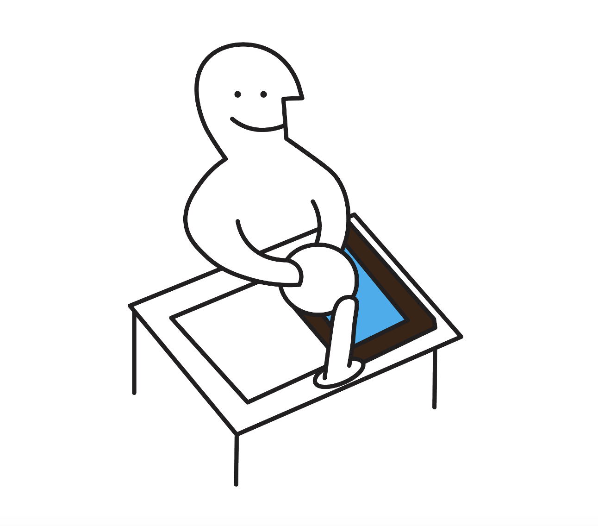
Greywater from rinsing and scraping falls into the vessel rather than down the drain.
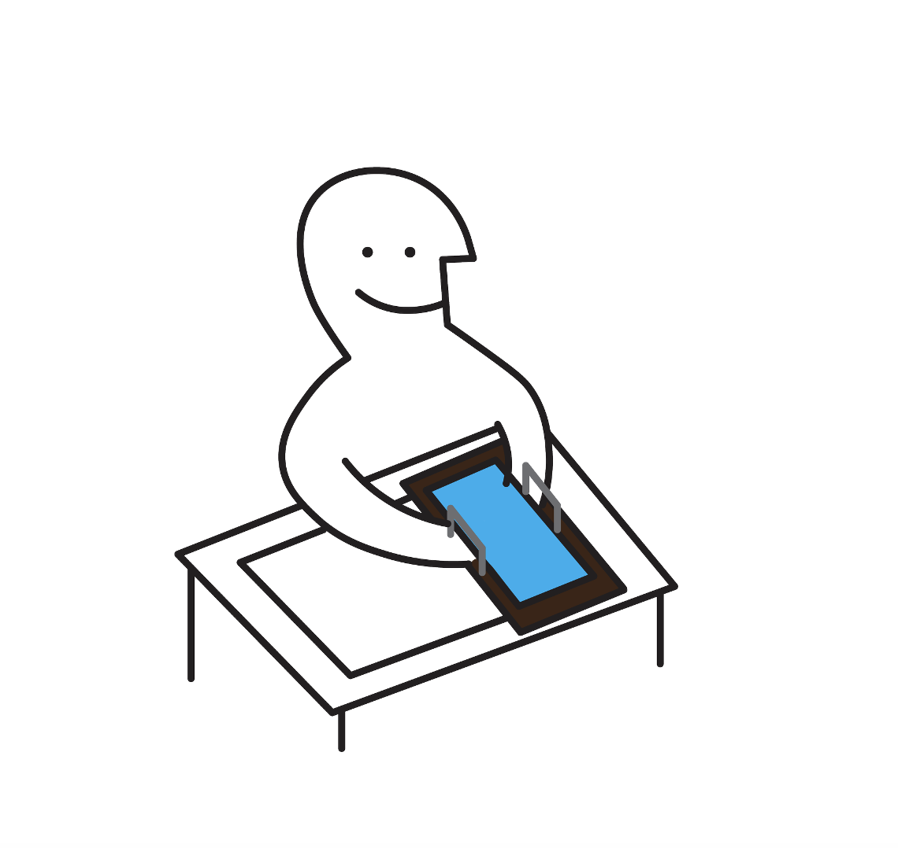
Tip the food bits into the bin. The water left in the vessel is now clean enough to reuse.
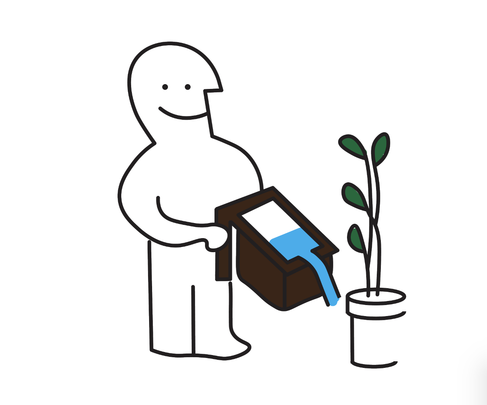
Water plants, wash the car, or fill a bucket. Whatever the household needs.
Fit any standard sink, stay stable while filling, pour cleanly, and nest for flatpack shipping. Each constraint has its answer in the form.
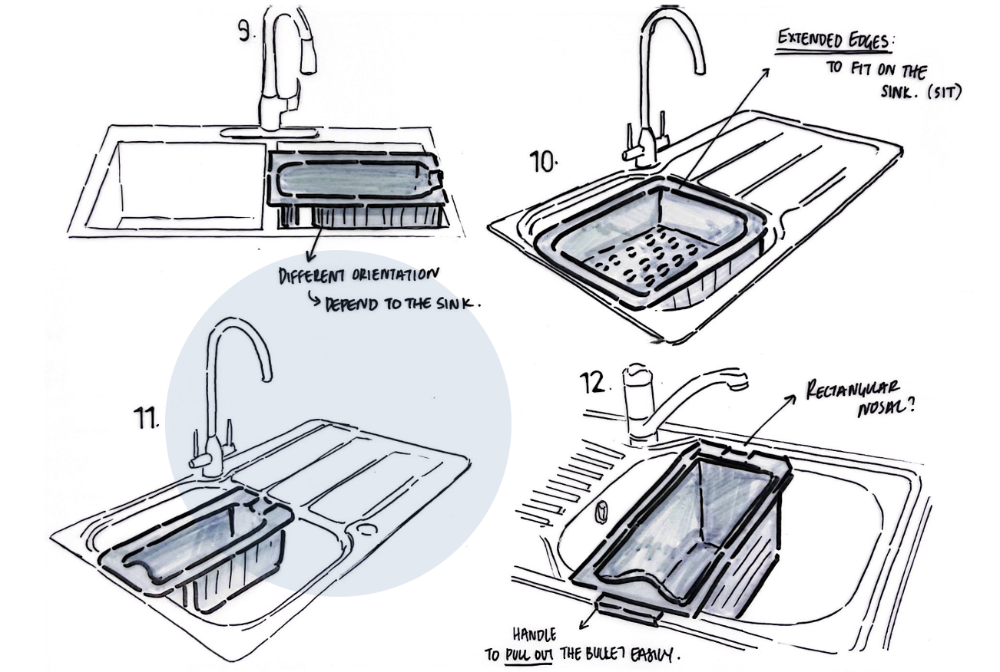
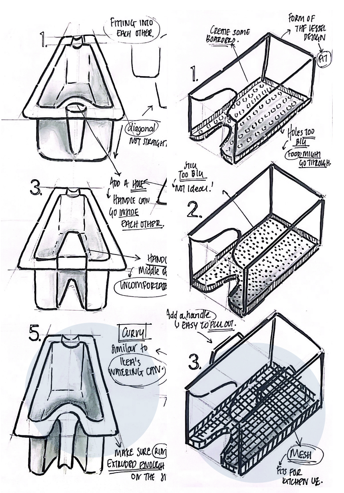
Curved enough to pour without spilling, flat enough to sit against the sink edge.
The rim extrudes past the body to hook over the sink edge and grip when wet.
A U-shaped cutout lets units nest inside each other for IKEA's flatpack shipping.
A removable mesh strainer traps debris during washing so the water stays reusable.
The brief came from IKEA, so the production logic had to match: a material their supply chain already runs, a process suited to mass output, and a CMF that fits the existing kitchenware family.
Waterproof, durable, and the most recycled plastic in the world. Fits IKEA's commitment to only renewable or recycled-based plastic by 2030.
One tool, one part per cycle. Consistent walls and smooth curves. The handle cutout that lets units nest also simplifies the mould.
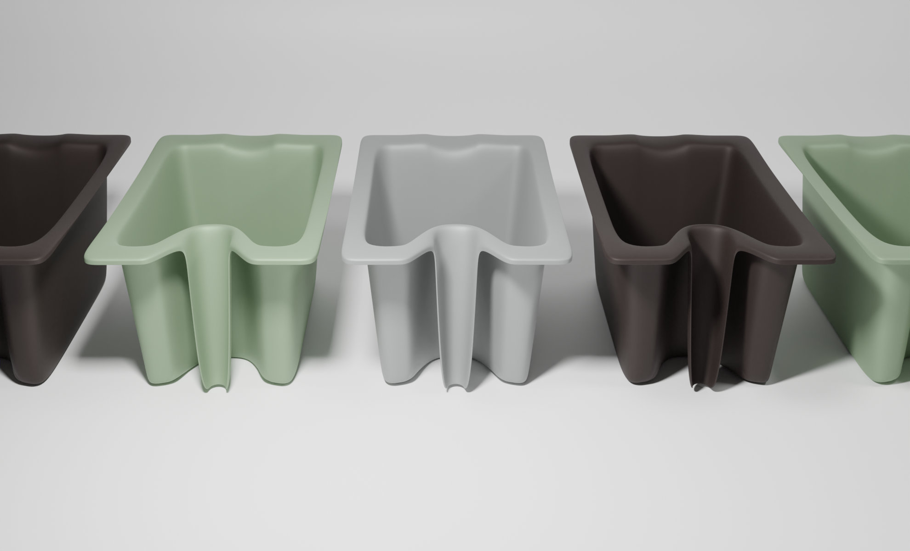
Designed not just for the person handwashing dishes, but also for the company that ships it and the planet that carries the cost.
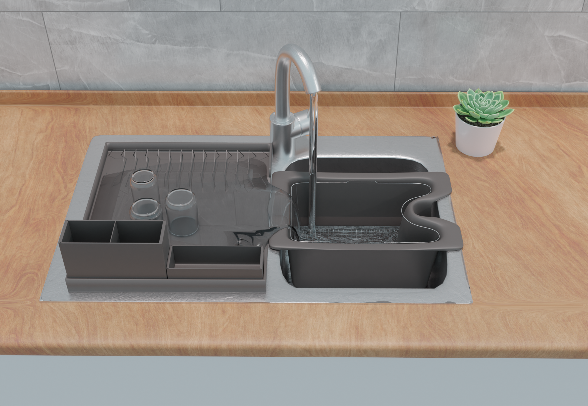
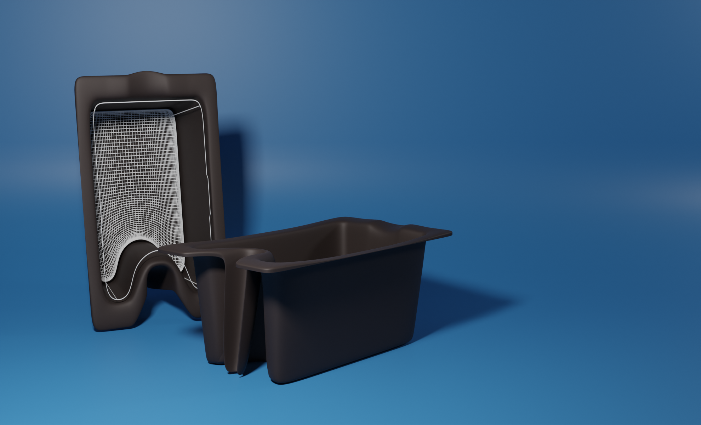
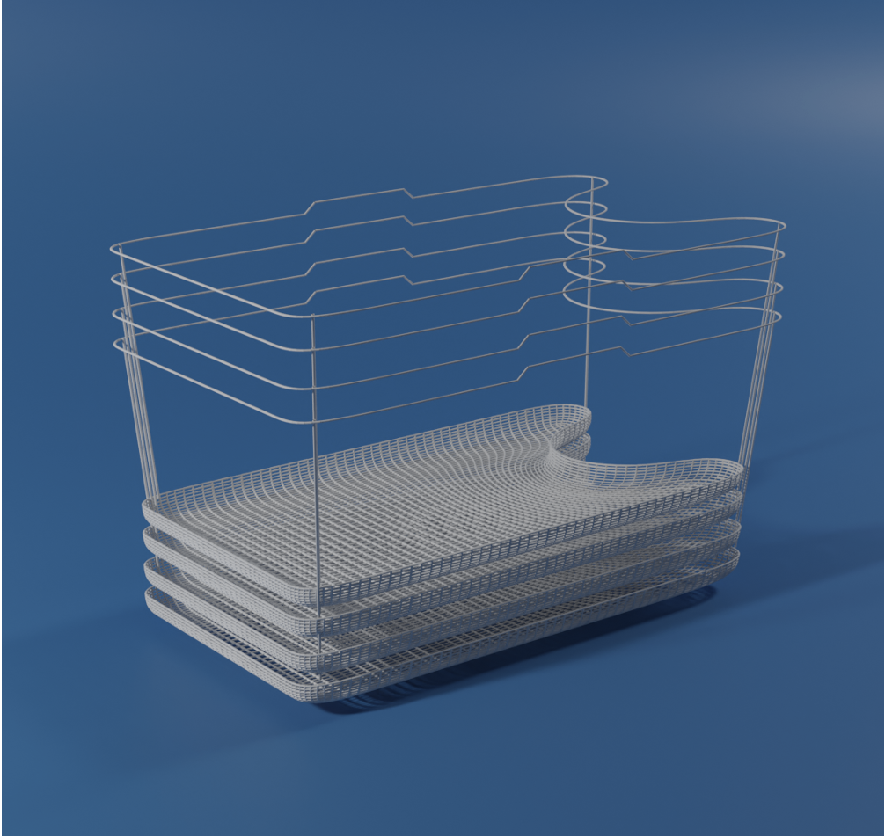
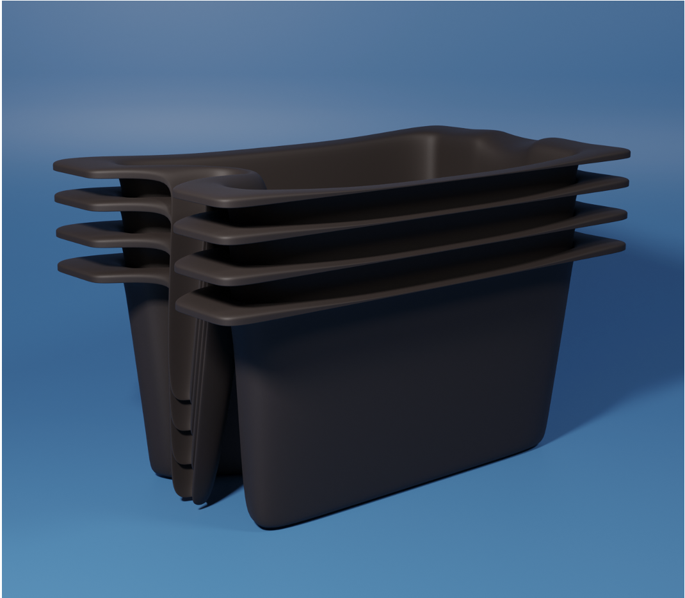